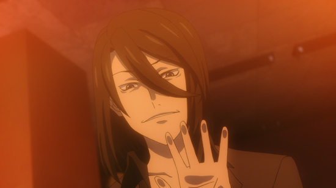

「Lostorage incited WIXOSS」
Column of episode 08
The mindblowing truth!!
Most male Wixoss players are actually female!
And that's what we learned from this episode. Everyone take a closer look around the next time you go to a Wixoss Party.
A female voice, an expensive home
It seems like Satomi-san is one to sleep in the nude
Man, Satomi-san has a particularly horrible wake up routine.
1) Uses a person's voice as an alarm
2) Doesn't brush his teeth and wakes up with mint tablets
3) Changes and leaves immediately
Damn, talk about a villain!
Hanna's Battle Class (Textbook problems)
 Hm, calculating now.
Hm, calculating now.
By including Crisis Chance, you can avoid absolute danger.
Especially when you're facing an opponent with a technical play style, it's absolutely necessary to avoid an end-game killer.
Hmm, it appears I'll lose in ten moves.
↑The face of someone who doesn't know why they've won
Whenever I watch shows about shogi, I always think about how difficult it must be to explain the inner workings of someone special's mind to normal people.
I really respect the judges at card game tournaments and such.
And then the pure femininity bazooka shot, the "Homemade chocolate muffins & tea"
She can make sweets, she's thoughtful, she plays Wixoss, and on top of that is a high school girl.
She's got all four bases covered. Amazing. I wouldn't be able to stay standing if I saw a combo like that.
Hanna didn't stand a chance. She slowly begins to reveal her past.
Her fragmented memories are shown in monochrome.
What was I...?
I can only guess if she'll ever recall those memories.
The first encounter with Wixoss is always sudden
The most important thing you need to become friends with someone is a popular thing you share.
Yes, it was Wixoss all along!
This looks pretty popular! By Sis.
I heard that Wixoss was pretty popular.
Would you like to play Wixoss? I demand satisfaction!
Didn't you like Wixoss?
Let's see, right now... the most popular Wixoss deck is...
 Weren't you looking at Wixoss at the card shop the other day?
Weren't you looking at Wixoss at the card shop the other day?
I understand. Let's Wixoss.
And thus, the Wixoss player base continues to grow.
It's almost Christmas, and have you ever gone to the toy store and wondered why the presents Santa gets for children always seem to be "what parents think is popular"?
Oh, forgive me. Santa knows what he's doing. The presents of course must be from Takara Tomy.
I'm a girl too. It's not as if I only go to card shops.
And then the next minute she's in the card shop.
The card shop she's in right now was modeled after one in Ikebukuro. (Well, it's actually made up from several different shops there...)
Perhaps if you go to Ikebukuro yourself you might notice some familiar sights.
The pure boy who likes shoebills
The day a rainbow streaked across the sky after rain
I finally completed all the requirements, so I summoned Shoebill.
And then the shoebill gave us this soccer ball
Or something like that. Obviously the pictures all happened right in a row.
Shirai-kun can't even remember such a powerfully memorable event like that.
Shou-chan, try to remember! I want to know how it happened!!
And then Chinatsu-chan appeared behind him.
Smile (^^)
And then an embrace
Watch the anime to find out what happened next.
And watching such an exciting development, Guzuko's heart begins to race!
Somewhere deep inside Chinatsu are the remains of her conscience. Don't you think she can still turn back now?
And yet there is an invisible wall between Chinatsu and Suzuko's hearts.
bye-bye, my memories.
Then a battle. Mizushima Kiyoi-chan makes her appearance!!!
Hello, I'm Kiyoi. I got dragged in once again.
I was just having fun playing Wixoss when all of a sudden I became a Selector.
She asked me to name her, so I gave her my old nickname, Piruluk.
And then, she gained the ability to peek at others' wishes.
The power she was able to use along with Peeping Analyze as Piruluk is now her coin ability. She can force her opponent to discard all held cards of one level, and also see her wish.
Hey, that's unfair...!
It appears that she's using "Misfortune Insects" this time. I can only wonder what feelings she has for the battles this time.
Has she spoken to her friend Amika-chan about this yet?
We'll talk about Piruluk's battle at another time.
And now, a battle! Narumi-oniichan appears!!!
There are a lot of shocking scenes coming up, so I'll try to lighten them up with a Kansai dialect.
Hn? Well if it ain't Satomi-han we got thar. S'goin on?
Narumi-san got a call from Satomi and was expecting to meet his next opponent. He's understandably confused.
Hoh? Guess ah din't tell ya, but ah'm a Selector
Huh? Nice to meet you, I'm Carnival. Is't like that?
Jus' hang on a secn't! Huh? Yer necktie's purrty nice.
And as he found out that Satomi-san was the one who erased his sister Aya-chan, the battle begins.
You nincompoop! Nitwit! Don't be gittin' riled up!
Ah, yer a laugh. Could ya be inny more lika Aya-chan?
Whass that?! I win't let ya say another word! Holograph!
Poppon! Team Aaya, takin' the stage!
Yep, it's Holograph. There are so many Aaya-chans.

Thass nice! Yer sister must be hootin' an' holleran! Gyahaha!
So, it looks like Satomi-san uses "Red Space". Other than Garnet Star, his field is full of cards we've never seen before.
You won't find them in any of the releases in December either. Is Satomi-san from the future?
O-Out Dust! Destroy both me and my opponent's hands!
However, that allows Moridra's effect to take place (Enercharge when trashed from hand).
He's got a lot of different cards in his deck, and he probably changed it up because he knew who his opponent was. That's no fair.
Coin Bet an' "Joker"!! Ah'll change this to whatever card I want.
Garnet Star changed into Kosaki.
With a bunch'a Osaki-sans used as Ener, it's 'n Ener Festival!
Supernova!!! Bro, yet done for!
T'ss all over... What should I call myself from now on?!
His sister was also likely finished by Super Nova. What an awful guy.
Aaya-san's left the stage because of this, so we'll take a look at one of her cards from WX16 Decided Selector.
It's a rare LRIG Art that's Aaya limited and increases her ability.
Carnival-san looks strong. I wonder what she looks like under her mask.
And now! A battle!! Awakened Homura Suzuko appears!!!
Actually, I battled too! I'll show you the results of my training!
While everything else was happening, Suzuko appeared looking like she learned a new spell.
That spell goes by the name of "BattleRuler".
It allows her to instantly skip a battle scene.
(I won, but it wasn't animated... I shouldn't have used that spell...)
I feel bad for her, so I'll introduce one of the cards she used.
It's Datemasa.
Every time a Signi with Rise is played her effect activates, and you can even Rise during your opponent's turn!
Together with Datemasa, let's-a Rise Party!
The new wave WX16 Decided Selector including Datemasa comes out 12/15!
And that's the end of episode 8!
 Look forward to episode 9 too!